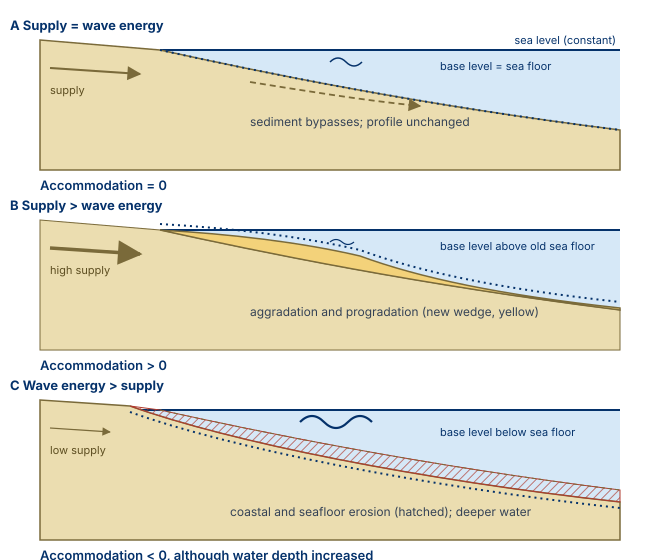
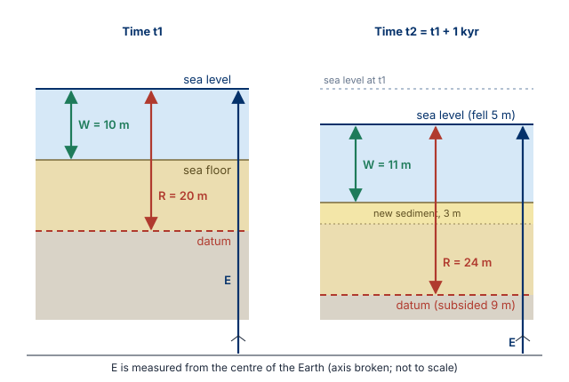
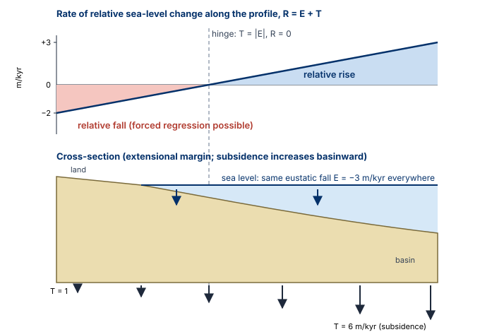

Learning Objectives
- Explain how the three allogenic controls (tectonics, eustasy, climate) interact, and why sediment supply is not a fourth control on the same level
- Distinguish eustasy, relative sea level and water depth, and calculate relative sea-level change and water-depth change from rates of eustasy, subsidence and sedimentation
- Predict the shoreline response (transgression, normal regression, forced regression) from those rates, and explain why water depth is a poor guide to relative sea level
- Explain why sediment supply is not sedimentation, and how energy flux sets base level and can change accommodation without any change in sea level
- Recognise the stratigraphic fingerprints of tectonic and eustatic control, and the limits of each argument
- Evaluate claims of orbital (Milankovitch) forcing critically
- Explain how differential subsidence makes the same eustatic change produce relative fall in one part of a basin and relative rise in another
Part I: The Logic of the Controls
1. Two things through which everything acts
In Module 1 the shoreline moved according to a balance: the rate at which accommodation is created or destroyed, against the rate at which sediment fills it. This module opens the left-hand box of that balance and asks what drives it, and how sediment supply depends on the same drivers.
Catuneanu (2006, Fig. 3.1) summarises the logic in one diagram, which you should be able to redraw. On the left are the three allogenic controls: tectonics (subsidence and uplift), eustasy (global sea-level change) and climate. They are linked to each other: tectonics changes the volume of the ocean basins, climate changes the volume of continental ice, and both therefore drive eustasy. In the middle are the two things through which the controls act: accommodation, the space available for sediment to fill, and the balance between energy flux and sediment supply, that is, how much sediment arrives and how much energy is available to move it. On the right is the result: sedimentation, read in the rocks as depositional trends (aggradation or erosion, progradation or retrogradation).
Hierarchy to remember
Sediment supply is not a fourth allogenic control on the same level as the other three. It is "primarily a by-product of climate and tectonism" (Catuneanu, 2006, p. 76), which set relief and weathering in the source area. Three primary controls; two things through which they act. Catuneanu (2017, section 3.1) puts the same point in modern form: whatever the dominant control, the stratigraphic architecture always comes down to two variables, accommodation and sedimentation.
2. Relative importance changes across a basin
Not every control matters equally everywhere. Catuneanu (2006, Fig. 3.3, after Shanley & McCabe, 1994) divides a basin into three zones from distal to proximal:
- Zone 1, marine: accommodation is controlled by subsidence and sea level.
- Zone 2, downstream fluvial: rivers are still affected by sea level, because their profile is anchored at the shoreline.
- Zone 3, upstream fluvial: sea level no longer matters; only climate and tectonics act.
The diagram is drawn for two basin types. In an extensional basin (rift, passive margin) subsidence rates increase basinward. In a foreland basin they increase towards the orogen, because the load of the thrust sheets flexes the lithosphere down, and decrease away from it. The vertical axis shows relative contributions, not amounts, and the zone boundaries shift with local conditions: do not read numbers from it. Variations in energy flux, mainly but not only climatic, affect accommodation in all three zones.
Consequence you will use all module
Because subsidence varies across a basin, the same eustatic fall can produce a relative fall in one part of the basin and a relative rise in another, at the same time. Differential subsidence is the norm, not the exception (Part VII).
Part II: Tectonics
3. Subsidence
Total subsidence combines several mechanisms (Catuneanu, 2006, pp. 64, 74; basin classification after Ingersoll & Busby, 1995):
| Mechanism | Where it dominates | How it works |
|---|---|---|
| Lithospheric stretching | Rifts, passive margins (early) | Crustal thinning lowers the surface |
| Thermal subsidence | Passive margins (later) | Stretched lithosphere cools and becomes denser |
| Flexural loading | Foreland basins | Weight of thrust sheets bends the lithosphere down |
| Dynamic subsidence | Very long wavelengths, any setting | Flow in the mantle pulls the surface down |
| Loading by sediment, water and ice | All basins | Isostatic response to added load |
| Compaction; salt withdrawal and dissolution | All basins; salt basins | The sediment column itself loses volume; every reference level moves down even if basement does not |
Why this matters: total subsidence is "arguably the most important control on accommodation", because the overall geometry of the basin fill reflects the subsidence pattern, and because sea level affects only zones 1 and 2 while subsidence acts everywhere (Catuneanu, 2006, p. 76). Catuneanu (2019a, Fig. 8 caption) states the same in modern form: subsidence controls accommodation in all settings of a basin, whereas sea level controls it only downdip of the shoreline. Sedimentation also feeds back: isostatic loading by the accumulating sediment itself creates additional accommodation (Catuneanu, 2006, p. 76).
4. Uplift
Mechanisms include orogenic shortening and thrusting, reverse faults within the basin, crustal heating, salt diapirism and isostatic rebound after a load is removed (erosion, deglaciation, loss of water load). Glacio-isostasy shows the sequence clearly: an ice sheet grows and loads the crust; the crust subsides; the ice melts and the load is removed; the crust slowly rebounds. Scandinavia is still rising today for this reason, and Catuneanu (2006, Fig. 3.34) shows a modern forced-regressive delta in the Canadian Arctic where post-glacial rebound outpaces present-day sea-level rise. At the same moment the sea rises globally because the ice melted, and the land rises locally for the same reason: relative sea level is the combination of the two.
Uplift destroys accommodation and can force a regression without any change in global sea level. In the source area, uplift rejuvenates relief and increases sediment supply. One tectonic event can therefore act on both sides of the balance.
5. Recognising tectonic control
Tectonics rarely leaves one obvious signature; the case is built from several independent lines of evidence (Catuneanu, 2006, p. 75, lists the first four, inferring slope changes from shifts in fluvial style and tilt changes from palaeocurrents; burial depth from late diagenetic minerals, fluid inclusions, vitrinite reflectance and apatite fission tracks):
- Wedge-shaped sequences, thicker on one side: differential subsidence
- Coarse facies along one basin margin: rejuvenation of the adjacent source area
- Changes in syndepositional tilt and slope gradient through time
- Lateral variations in maximum burial depth
- Changes in sediment composition and provenance: the source itself changed (e.g. Ravidà et al., 2021, for the Permian–Triassic of the SE Germanic Basin)
Case study: accommodation controlled by tectonics alone (Karoo Basin)
The Balfour Formation (late Late Permian to earliest Triassic) is entirely fluvial and accumulated in the foredeep of the Karoo foreland basin with no coeval marine environment in the preserved basin, so eustasy can be ruled out (Catuneanu & Elango, 2001). It consists of six depositional sequences separated by subaerial unconformities, deposited in about 4 Myr (average 0.66 Myr per cycle), under a temperate to humid climate with no recorded climatic fluctuation. The authors relate sediment accumulation to flexural subsidence during orogenic loading (thrusting), and the bounding unconformities to flexural uplift during unloading (erosion and/or extension). Each sequence fines upward and passes from higher- to lower-energy fluvial styles as the topographic gradient decreased during loading. This is the kind of evidence (no marine influence, no climate signal, asymmetric profiles, changes in palaeoflow across boundaries) that tectonic control requires. Module 6 returns to it.
Part III: Eustasy
6. What changes global sea level
Eustasy is global sea level measured relative to a fixed datum, the centre of the Earth. Two families of processes change it:
- Changes in ocean-water volume: growth and melting of ice sheets (glacio-eustasy) and thermal expansion of seawater.
- Changes in ocean-basin volume: for example large, hot mid-ocean ridges displace water onto the continents and sea level rises (tectono-eustasy), linked to the supercontinent cycle.
Eustasy alone does not create accommodation at any given place. What matters locally is relative sea level: eustasy combined with local subsidence or uplift (Section 13).
7. Eustatic cyclicity
Eustatic changes occur over very different time scales. The classification below is Catuneanu (2006, Fig. 3.2), modified from Vail et al. (1977) and Miall (2000). The caption adds that local and basin-scale tectonism is superimposed on, and independent of, these global cycles, often with higher rates and magnitudes.
| Order | Duration | Cause |
|---|---|---|
| First | 200–400 Myr | Formation and breakup of supercontinents |
| Second | 10–100 Myr | Changes in the volume of mid-ocean spreading centres |
| Third | 1–10 Myr | Regional plate kinematics |
| Fourth and fifth | 0.01–1 Myr (10 kyr–1 Myr) | Orbital forcing |
When Pangaea broke up, new ridges formed, the oceans became shallower on average and water spilled onto the continents; much of the high sea level of the Cretaceous is linked to this kind of process. But assigning an order to a cycle does not tell you its mechanism: the categories describe durations, and the cause has to be demonstrated in each basin (Module 2, hierarchy).
8. Signatures and limits
If eustasy dominates a basin, three signatures are expected (Catuneanu, 2006, p. 75): tabular sequences (accommodation created equally across the basin), synchronous surfaces across the basin, and no rejuvenation of source areas (e.g. no conglomerates along the proximal basin rim). The limits are serious:
- Published eustatic curves for the Late Cretaceous to present disagree strongly in amplitude and timing because they rest on different methods (seismic onlap, backstripping of wells, flooding of continents, ridge volumes), each with its own assumptions.
- Separating eustasy from regional tectonics is difficult.
- Dynamic topography can tilt whole margins and contaminate "eustatic" curves.
Research example: the New Jersey curve and dynamic subsidence
The sea-level curve of Miller and colleagues (2005) is derived from boreholes on the New Jersey margin. Spasojević et al. (2008) made the case that the U.S. east coast has been subsiding dynamically since the Eocene because of mantle flow beneath it. If that is correct, part of what was read as global sea-level change in New Jersey is local vertical motion of the margin. Even the best-studied eustatic curve can contain a tectonic signal. Note the shift in interpretation: Catuneanu (2006, p. 75) still described the New Jersey Coastal Plain as "subject to minimal tectonic activity" when citing backstripping results of Miller et al. (2004); two years later that assumption was challenged.
Part IV: Climate and Orbital Forcing
9. Climate acts on both sides of the balance
- Accommodation, mainly via glacio-eustasy: cooling grows ice sheets and lowers sea level; warming melts them and raises it.
- Energy flux: storms, river discharge, wind.
- Sediment supply: weathering, runoff, vegetation cover. A wetter climate can raise discharge and transport capacity; vegetation can stabilise slopes and reduce erosion.
Icehouse versus greenhouse: with large ice sheets, glacio-eustatic changes are large and frequent (the last glacial cycle moved the Adriatic shoreline by hundreds of kilometres; Amorosi et al., 2016). Without large ice sheets, high-frequency sea-level changes are smaller and their mechanism is debated. Catuneanu (2019a, Fig. 8 caption) notes that climate's contribution to accommodation is accounted for under subsidence (glacio-isostasy) and sea-level change, while its effect on sedimentation works through supply and energy.
10. Milankovitch parameters
| Parameter | What varies | Main periods |
|---|---|---|
| Eccentricity | Shape of the orbit, near-circular to slightly elliptical | ~100 kyr and 405 kyr |
| Obliquity | Tilt of the rotation axis, 22.1°–24.5° | ~41 kyr |
| Precession | Orientation of the axis relative to the orbit | climatic precession ~19–23 kyr |
Values follow the lecture slides; Catuneanu (2006, p. 75) rounds them slightly differently (eccentricity ~100 and 413 kyr, precession ~21 kyr average). The orbital parameters redistribute insolation between seasons and latitudes. Summer insolation at high northern latitudes decides whether snow survives the summer and ice sheets can grow. Through climate and ice volume they pace sea level, sediment supply and energy flux. In 1976 Hays, Imbrie and Shackleton showed from deep-sea sediments that the timing of the ice ages matches these cycles, and called the orbit the pacemaker of the ice ages.
11. Caveats for cyclostratigraphy
Rhythmic layering is not automatically proof of orbital forcing (after Hilgen et al., 2015):
- Incomplete record: non-deposition or erosion removes cycles, especially on shallow platforms and in shallow lakes, where a small fall exposes everything.
- Distorted signal: bioturbation, diagenesis and changing sedimentation rate; equal thicknesses do not mean equal times.
- Weak forcing: precession is weak when eccentricity is low and may not be recorded.
- Autogenic look-alikes: internal processes can produce similar rhythms (Strasser, 1991; Burgess, 2001, who modelled carbonate sequences without relative sea-level oscillations).
The strongest case combines independent age control, statistical analysis of the cycles, and a plausible physical link between forcing and sedimentary process.
Part V: Sediment Supply, Energy Flux and Base Level
12. Supply is not sedimentation
Sediment supply is the amount (flux) and grain size of sediment delivered from source areas by gravity, water and wind. It is controlled by tectonics (relief, rejuvenation), climate (weathering, runoff), source-rock lithology (a granite yields sand, a shale mud) and vegetation. Sedimentation is how much actually stays at a given place, measured as vertical aggradation. The link between the two is the energy of the transport agents: a river can carry a huge load across a high-energy shelf and deliver it to the deep sea, leaving almost nothing behind (Catuneanu, 2006; 2019a, section 3.1.2).
The shoreline balance is therefore between the rate of change of accommodation and the rate of sedimentation, both measured as vertical distances. Catuneanu (2019a) adds that even under constant relative sea-level rise and constant supply, progradation can turn into retrogradation because the sediment is spread over a growing area (autoretreat; Muto & Steel, 2002). Another reason why supply alone does not predict the stacking pattern.
13. Energy flux and base level: the shoreface cases
Catuneanu (2006, Fig. 3.8) shows that accommodation can change even when sea level and subsidence do not change at all. Take a shoreface with constant sea level and no subsidence; vary only sediment supply and wave energy.

Accommodation is measured to base level, not to sea level
In case C the water is deeper, so there is more space for water, but less space for sediment. Water depth is not accommodation. Base level is lower during storms than in fair weather because storm waves rework the sea floor at greater depth, and rivers erode slightly below sea level at their mouths (Schumm, 1993, in Catuneanu, 2006): base level and sea level are close, but not identical. Catuneanu (2006, p. 86) notes that such energy fluctuations are mostly seasonal or shorter, so for sequence-stratigraphic time scales sea level is an acceptable proxy for base level and relative sea-level change for accommodation change.
Catuneanu (2006, Fig. 3.4) generalises this: climate acts through discharge and supply on the fluvial side and through waves and currents on the marine side; subsidence acts through total subsidence and tilt; eustasy acts on marine accommodation directly and on rivers through coastal elevation. Differential subsidence can change water velocity in rivers (by changing gradient) and the type of gravity flows in marine and lacustrine basins (by changing slope steepness). All controls end up shifting the balance between supply and energy flux: if energy wins, erosion (negative accommodation); if sediment wins, accumulation (positive accommodation).
14. Base level and the graded river profile
Base level is the reference surface to which continental denudation and marine aggradation tend; above it land is eroded, below it the sea fills up. It is often approximated by sea level, and its extension beneath the continents marks the lowest level of continental denudation (Catuneanu, 2006, Fig. 3.10). Definitions differ between authors (compiled in Catuneanu, 2006, Fig. 3.9). Catuneanu (2017, 2019a) distinguishes the ultimate base level (sea level, linked to accommodation) from temporary base levels (graded profiles of rivers and sea floors, a descriptor of sedimentation): a temporary base level is a surface of equilibrium between sediment supply, which promotes deposition, and transport energy, which promotes erosion (Barrell, 1917).
A graded (equilibrium) river transports its load without net deposition or erosion. A river above its graded profile incises; one below it aggrades. The profile is anchored to base level at the river mouth, so when base level rises or falls the lower reaches aggrade or incise. A lake is a local base level (Catuneanu, 2006, Fig. 3.11): upstream the river adjusts to the lake level, downstream to the sea. Drain the lake or build a dam and the upstream river must adjust to a new base level, just as rivers incised into the exposed shelf when sea level fell during the last glaciation in the Po Plain–Adriatic system (Amorosi et al., 2016).
Part VI: Eustasy, Relative Sea Level and Water Depth
15. Three quantities, three reference surfaces
Catuneanu (2006, Fig. 3.12, after Posamentier et al., 1988) uses three reference surfaces: sea level, sea floor, and a datum, a horizon in the subsurface that moves down with subsidence and up with uplift but is indifferent to sedimentation.
- Eustasy (E): sea level relative to the centre of the Earth.
- Relative sea level (R): sea level relative to the datum. Its change records how much accommodation was created or lost, independently of sedimentation.
- Water depth (W): sea level relative to the sea floor: how much accommodation is still unfilled after sedimentation has taken its share.

16. The numerical example
Sign convention used here and in the calculator: eustatic rise positive, fall negative; subsidence positive, uplift negative (both move sea level up relative to the datum); sedimentation positive. Then:
Catuneanu's example (2006, p. 86): sea level falls at 5 m/kyr (ΔE = −5) while the basin subsides at 9 m/kyr (ΔT = +9). Relative sea level rises at 4 m/kyr: accommodation is being created although global sea level is falling. With sedimentation of 3 m/kyr, accommodation is created faster than it is consumed, so the water deepens at 1 m/kyr. Near the shoreline that means a transgression. Mind the qualifier in the original: the link between water-depth change and shoreline shift (deepening = transgression, shallowing = regression) is only truly valid in shallow-marine areas near the shoreline, and can be distorted offshore (Catuneanu, 2006, p. 86, citing Catuneanu et al., 1998). Global sea level falling, and yet a transgression: this is why eustasy alone is never used to interpret shoreline shifts. Catuneanu et al. (1998, Fig. 4) formalise exactly this bookkeeping (R = E + T, W = R − S in their notation for rates).
Interactive calculator: from rates to shoreline response
Rates in m/kyr, for a point at the shoreline. Assumes energy flux is constant (base level follows relative sea level) and ignores autoretreat and compaction feedbacks; this is a teaching tool, not a basin model.
–
–
–
–
17. Ten ways to get a relative rise or fall
Catuneanu (2006, Figs. 3.13 and 3.14) lists all combinations of eustasy and tectonics; arrow lengths in the original are proportional to rates:
| Relative rise (5 ways) | Relative fall (5 ways) |
|---|---|
| Subsidence + eustatic rise | Uplift + eustatic fall |
| Subsidence faster than eustatic fall | Uplift faster than eustatic rise |
| Eustatic rise, no subsidence | Eustatic fall, no subsidence |
| Subsidence, no eustatic change | Uplift, no eustatic change |
| Eustatic rise faster than uplift | Eustatic fall faster than subsidence |
Two lessons. First, the same relative change can have completely different causes, so rocks at one location cannot tell you whether eustasy or tectonics was responsible. Second, during a relative rise the new accommodation may be filled at any rate, so the water may deepen or shallow; during a relative fall accommodation is lost and the water almost always shallows. A shallowing-upward succession does not tell you that sea level fell. Catuneanu et al. (1998) make the same point: deepening- and shallowing-upward facies must not be confused with transgressive and regressive systems tracts, which are defined by shoreline movement.
18. The full flow of controls
Catuneanu (2006, Fig. 3.15) assembles everything for a marine setting. In words, from bottom left:
- Eustasy (sea level to centre of the Earth) and tectonics (moves the datum) together give relative sea-level change.
- Energy flux (waves, currents) lowers base level below sea level: more energy relative to supply, base level falls and accommodation is lost; less energy, base level rises and accommodation is gained. Relative sea level plus energy flux gives base-level change.
- Base-level change creates or destroys accommodation; sedimentation consumes it.
- The balance between creation and consumption decides the shoreline shift: transgression or regression.
The chart is valid for zone 1 of Fig. 3.3. Two fine points from the caption: short-term climatic changes (seasonal and shorter) are counted under energy flux, while longer-term changes such as Milankovitch cycles are built into eustasy. And base-level changes depend on sediment supply but are measured independently of sedimentation, whereas relative sea-level changes are independent of both. If you can redraw this diagram and explain each arrow, you have understood this part of the course.
Part VII: Going Deeper (not in the lecture)
19. Differential subsidence: opposite answers on one profile
Section 2 warned that the same eustatic fall can give a relative fall in one place and a relative rise in another. Catuneanu (2006, pp. 87–89) states it explicitly: although the shoreline can shift only one way along a dip profile at any time, accommodation "may change with different rates, and even in opposite directions, along the same cross-sectional profile" (Jervey, 1988; Catuneanu et al., 1998), because differential subsidence is the norm; during a sea-level fall accommodation may be negative in slowly subsiding areas and positive where subsidence outpaces the fall. Because sedimentation also varies along dip, water-depth trends are even more variable. Sequence-stratigraphic models nevertheless use one reference curve: base-level change at the shoreline. Figure 3 shows the geometry for an extensional margin, with illustrative numbers: a eustatic fall of 3 m/kyr everywhere, and subsidence increasing basinward from 1 to 6 m/kyr. Where subsidence is slower than the fall, relative sea level falls and a forced regression can occur; where it is faster, relative sea level keeps rising. The boundary between the two is the point where T = |E|.

What Catuneanu et al. (1998) actually modelled. They used a sinusoidal eustatic curve (amplitude 10 m, period 2 Myr; maximum rate of fall 15.7 m/Myr at the inflexion point) on a 200 km shelf profile where subsidence increases basinward from 20 to 40 m/Myr and sedimentation decreases from 15 to 5 m/Myr. In that profile (their Profile A) subsidence everywhere exceeds the eustatic fall, so relative sea level rises continuously; only the water depth (subsidence minus sedimentation, plus eustasy) changes sign. The point where water depth is stationary migrates through time, so the surfaces defined on water-depth change (their maximum flooding surface and conformable transgressive surface) are diachronous. Beyond 71.3 km along the profile, net subsidence of the depositional surface always outpaced the maximum eustatic fall and the water deepened continuously. In two further profiles the subsidence rates were chosen to overlap partly with the eustatic rates, so that relative fall and relative rise occur at the same time in different parts of the basin; the correlative conformity (end of relative fall) then becomes diachronous too. Their general result: such surfaces can be diachronous by up to a quarter of the period of the highest-frequency control, whichever of eustasy, tectonics or sedimentation that is.
Why this matters
Bounding surfaces form only where the controlling rates are of the same order of magnitude and periodically balance each other (Catuneanu et al., 1998). If subsidence always exceeds eustatic fall, no forced regression and no correlative conformity form there at all. The stratigraphic record of one eustatic event therefore varies across a basin, and the "same" surface need not be the same age everywhere. Catuneanu (2017, 2019a) generalises: the balance of accommodation and sedimentation can change along a shoreline, giving coeval deposition of different systems tracts along strike and diachronous systems-tract boundaries.
20. Downstream- versus upstream-controlled settings
Catuneanu (2006, Figs. 3.16 and 3.17) gives the flow of controls for zones 2 and 3. In the downstream reaches (zone 2), base-level change at the river mouth moves the anchor of the graded profile, and energy flux (mainly climatic discharge, also tectonic tilt) shifts the profile; sedimentation consumes the fluvial accommodation between graded profile and river bed. In the upstream reaches (zone 3), base level drops out of the chart: tectonics moves the datum and climate acts through discharge. Rivers usually feel base-level change for less than about 200 km upstream of the mouth (Miall, 1997, in Catuneanu, 2006, p. 87). Note also that in rivers, unlike the sea, both short- and long-term climate changes act through energy flux, because there is no physical proxy for the graded profile. The same zones have a modern equivalent (Catuneanu, 2017, Fig. 5; 2019a). In downstream-controlled areas, which include continental, coastal and marine systems responding to relative sea-level change, stacking patterns relate to shoreline trajectories and the conventional systems tracts apply. The downstream-controlled area may extend 100–102 km updip of the shoreline, depending on gradients and river size (Catuneanu, 2019a). In upstream-controlled areas, beyond the reach of relative sea level, stacking patterns form independently of the shoreline and are described by the degree of channel amalgamation (high- vs low-amalgamation systems tracts). The Balfour Formation (Section 5) is an upstream-controlled, entirely fluvial case. In retroarc foreland basins, out-of-phase flexure of foredeep and forebulge can produce "reciprocal" stratigraphies across the flexural hinge, with proximal sequences coeval with distal unconformities (Catuneanu, 2019a; Catuneanu & Elango, 2001).
Part VIII: Pitfalls and Questions
21. Common pitfalls
| Pitfall | Why it fails |
|---|---|
| "This boundary is eustatic" | A sequence boundary records base-level fall; its cause has to be demonstrated. |
| Synchronous = eustatic | Regional tectonics and dynamic topography can affect large areas at the same time (remember New Jersey). |
| Order = mechanism | A "third-order" cycle has no fixed duration or cause; rank is defined within a basin. |
| High supply = progradation | Progradation needs sedimentation to outpace accommodation; high supply in a fast-subsiding basin can still give transgression. |
| Supply = sedimentation | Energy flux decides how much of the supply accumulates. |
| Shallowing upward = sea-level fall | Water shallows whenever sedimentation outpaces relative rise; only a relative fall forces regression. |
22. Think about it
1. The same eustatic fall affects a passive margin and a foreland basin. Where is a forced regression least likely to be recorded, and why?
Model answer
Where subsidence is fastest. In a foreland basin that is close to the orogen. If subsidence there exceeds the eustatic fall, relative sea level keeps rising and no forced regression occurs, while in a slowly subsiding part of the same basin, or on a passive-margin shelf, the same fall produces a forced regression. Answer: in the most rapidly subsiding part of the foreland basin, near the orogen.
2. Two sections 1,000 km apart show an unconformity of the same age. Is this proof of eustasy? What else would you need?
Model answer
No. You need dating precise enough to show the two surfaces really are the same age, not just within each other's error bars. You need to exclude regional tectonics and dynamic topography, e.g. by showing that source areas were not uplifted and that sequences are tabular. Ideally you want the same surface in other, tectonically unrelated basins.
3. Wave energy increases at a shoreface while sea level and sediment supply stay the same. What happens to accommodation and to the shoreline?
Model answer
Base level is lowered below the sea floor, so accommodation becomes negative. Waves erode the shoreface and the coast, and the shoreline retreats landward without any change in sea level. This is case C of Figure 1.
Worked Exercise: Four Rate Scenarios
For each scenario at a shoreline, calculate the rate of relative sea-level change and of water-depth change, state whether accommodation is created or lost, name the shoreline response, and identify which of the ten eustasy–tectonics combinations (Section 17) applies. Rates in m/kyr. Check yourself with the calculator only after writing your answer.
| Scenario | Eustasy E | Tectonics T | Sedimentation S |
|---|---|---|---|
| 1 | +2 (rise) | +1 (subsidence) | 5 |
| 2 | −4 (fall) | +1 (subsidence) | 2 |
| 3 | 0 | −2 (uplift) | 0.5 |
| 4 | +1 (rise) | +2 (subsidence) | 3 |
Solution, scenario 1
R = +2 + 1 = +3 (relative rise, accommodation created at 3 m/kyr). W = 3 − 5 = −2 (shallowing at 2 m/kyr). Sedimentation outpaces the relative rise: normal regression (progradation with aggradation). Combination: subsidence + eustatic rise. Note the water shallows during a relative rise: shallowing does not mean sea-level fall.
Solution, scenario 2
R = −4 + 1 = −3 (relative fall, accommodation lost at 3 m/kyr). W = −3 − 2 = −5 (shallowing). The shoreline is forced basinward whatever the sedimentation rate: forced regression. Combination: eustatic fall faster than subsidence.
Solution, scenario 3
R = 0 − 2 = −2 (relative fall, accommodation lost). W = −2 − 0.5 = −2.5 (shallowing). Forced regression with no change in global sea level. Combination: uplift, no eustatic change. In the source area the same uplift may increase supply, but supply cannot stop a forced regression; it can only change how far the shoreline moves.
Solution, scenario 4
R = +1 + 2 = +3 (relative rise, accommodation created). W = 3 − 3 = 0. Sedimentation exactly keeps pace with relative rise: the shoreline is stationary and the system aggrades; this is the turnaround condition between normal regression and transgression. Combination: subsidence + eustatic rise. A small increase in S tips it into normal regression; a small decrease into transgression.
Key Points Summary
- Three allogenic controls (tectonics, eustasy, climate), not independent of each other, act through accommodation and the energy-flux/sediment-supply balance; sediment supply is a product of tectonics and climate
- Relative importance of the controls changes across a basin (marine, downstream fluvial, upstream fluvial); subsidence increases basinward in extensional basins and orogenward in foreland basins
- Subsidence (stretching, cooling, flexure, dynamic, loading, compaction) and uplift (shortening, heating, diapirism, isostatic rebound) both act locally; eustasy acts globally but never alone
- Relative sea-level change = eustasy + subsidence; water-depth change = relative change − sedimentation. A eustatic fall can coincide with a transgression
- Only a relative fall forces regression; during a relative rise water may deepen or shallow, so water depth is a poor guide to relative sea level
- Supply is not sedimentation; energy flux sets base level, and accommodation is measured to base level, not to sea level
- Tectonic and eustatic control must each be demonstrated with independent evidence; eustatic curves can contain tectonic signals (New Jersey, dynamic subsidence)
- Rhythmic layering is not proof of orbital forcing
- Differential subsidence makes accommodation change at different rates, and even in opposite directions, along one profile; surfaces tied to these changes can be diachronous
Key References
Core reading: Catuneanu, O. (2006) Principles of Sequence Stratigraphy. Elsevier, Amsterdam, 375 pp. (chapter 3, Accommodation and shoreline shifts) • Catuneanu, O. (2017) Sequence stratigraphy: guidelines for a standard methodology. Stratigraphy & Timescales 2, 1–57 (doi:10.1016/bs.sats.2017.07.003) • Catuneanu, O. (2019a) Model-independent sequence stratigraphy. Earth-Science Reviews 188, 312–388 • Catuneanu, O. (2022) Principles of Sequence Stratigraphy, 2nd ed. Elsevier, 490 pp.
Differential subsidence and diachroneity: Catuneanu, O., Willis, A.J., Miall, A.D. (1998) Temporal significance of sequence boundaries. Sedimentary Geology 121, 157–178 • Catuneanu, O., Elango, H.N. (2001) Tectonic control on fluvial styles: the Balfour Formation of the Karoo Basin, South Africa. Sedimentary Geology 140, 291–313
Controls: Barrell, J. (1917) GSA Bulletin 28, 745–904 • Jervey, M.T. (1988) SEPM Special Publication 42, 47–69 • Ingersoll, R.V., Busby, C.J. (1995) In: Busby & Ingersoll (Eds.), Tectonics of Sedimentary Basins. Blackwell, 1–51 • Miall, A.D. (2000) Principles of Sedimentary Basin Analysis, 3rd ed. Springer, 616 pp. • Muto, T., Steel, R.J. (2002) Basin Research 14, 303–318 • Posamentier, H.W., Jervey, M.T., Vail, P.R. (1988) SEPM Special Publication 42, 109–124 • Ravidà, D., Caracciolo, L., Heins, W.A., Stollhofen, H. (2021) Global and Planetary Change 206, 103632 • Shanley, K.W., McCabe, P.J. (1994) AAPG Bulletin 78, 544–568 • Spasojević, S., Liu, L., Gurnis, M., Müller, R.D. (2008) The case for dynamic subsidence of the U.S. east coast since the Eocene. Geophysical Research Letters 35, L08305
Cyclostratigraphy: Burgess, P.M. (2001) Geology 29, 1127–1130 • Hilgen, F.J. et al. (2015) Geological Society, London, Special Publications 404, 157–197 • Strasser, A. (1991) In: Einsele, Ricken & Seilacher (Eds.), Cycles and Events in Stratigraphy. Springer, 709–721
Example: Amorosi, A., Maselli, V., Trincardi, F. (2016) Earth-Science Reviews 153, 212–237
Self-Assessment Quiz
Each question asks you to reason, not to recall. Options are shuffled every time the page loads.